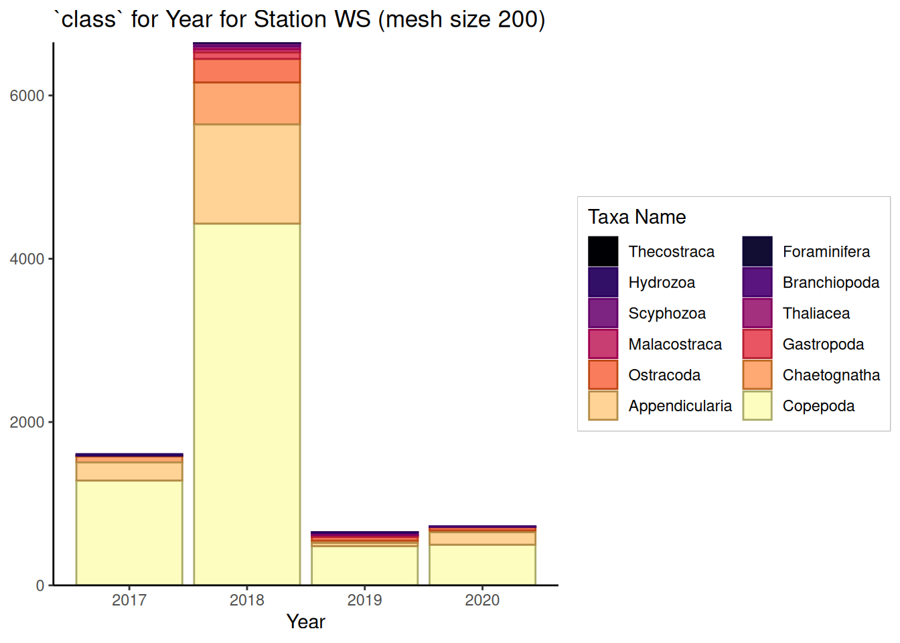

Filter data based on the constants from the previous chunk This will also only select the “adult” stages (i.e. NA in lifeStage)
Code
dat_filtered <- dat %>%filter(str_detect(site, const$site) # site& mesh == const$mesh # mesh size&is.na(lifeStage) # assumed na is adult ) %>%mutate(# select the lowest taxa name availabletaxa_level =pmap_chr(across(c(const$taxa_lvl)), \(...) { dat <-c(...) # combine all names into a vector taxa_name <-NA# loop through all names to select the lowest namefor (i inseq(length(dat))) {if (is.na(taxa_name)) { taxa_name <- dat[i] } else { taxa_name } }return(taxa_name) } ), ) %T>%print()
# A tibble: 268 × 25
cruise_id station site mesh date_time date year
<chr> <chr> <chr> <dbl> <dttm> <dttm> <dbl>
1 WS17170 Western … WS 200 2017-06-20 19:17:00 2017-06-20 00:00:00 2017
2 WS17170 Western … WS 200 2017-06-20 19:17:00 2017-06-20 00:00:00 2017
3 WS17170 Western … WS 200 2017-06-20 19:17:00 2017-06-20 00:00:00 2017
4 WS17170 Western … WS 200 2017-06-20 19:17:00 2017-06-20 00:00:00 2017
5 WS17170 Western … WS 200 2017-06-20 19:17:00 2017-06-20 00:00:00 2017
6 WS17170 Western … WS 200 2017-06-20 19:17:00 2017-06-20 00:00:00 2017
7 WS17170 Western … WS 200 2017-06-20 19:17:00 2017-06-20 00:00:00 2017
8 WS17170 Western … WS 200 2017-06-20 19:17:00 2017-06-20 00:00:00 2017
9 WS17170 Western … WS 200 2017-06-20 19:17:00 2017-06-20 00:00:00 2017
10 WS17170 Western … WS 200 2017-06-20 19:17:00 2017-06-20 00:00:00 2017
# ℹ 258 more rows
# ℹ 18 more variables: date_month <date>, time_gmt <time>, lat_in <dbl>,
# lon_in <dbl>, maximumDepthInMeters <dbl>, volume_filt_cubic_m <dbl>,
# taxa <chr>, scientificname <chr>, lifeStage <chr>, ind_m3 <dbl>,
# number_ind_sample <dbl>, kingdom <chr>, phylum <chr>, class <chr>,
# order <chr>, family <chr>, genus <chr>, taxa_level <chr>
6.0 Plot Data
6.1 Plot the Ind/m^3 based on Year
Either sum or mean
Code
# === Iterate over unique stations and create stacked bar chartsdat_filtered %>%summarise(.by =c(taxa_level, site, year),# ind_m3 = mean(ind_m3),ind_m3 =sum(ind_m3), ) %>%mutate(taxa_level =fct_reorder(taxa_level, ind_m3, .fun = max) ) %>%ggplot(aes(x = year, y = ind_m3, fill = taxa_level,color =after_scale(prismatic::clr_darken(fill, 0.3)) ), ) +geom_col() +labs(y =NULL,x ="Year",fill ="Taxa Name",title =glue("`{const$taxa_lvl[1]}` for Year for Station {const$site} (mesh size {const$mesh})") ) +scale_y_continuous(expand =c(0, 0)) +scale_fill_viridis_d(option ="A") +guides(fill =guide_legend(ncol =2, byrow =TRUE)) +theme_classic() +theme(legend.box.background =element_rect(color ="grey") )

6.2 Plot the Ind/m^3 based on Month and Year
Either sum or mean
Code
# === Iterate over unique stations and create stacked bar chartsdat_filtered %>%summarise(.by =c(site, year, date_month, taxa_level),# ind_m3 = mean(ind_m3)ind_m3 =sum(ind_m3) ) %>%mutate(.by =c(site, date_month),total =sum(ind_m3),percent = ind_m3 / total ) %>%mutate(taxa_level =fct_reorder(taxa_level, ind_m3, .fun = max),date_month2 =fct_reorder(format(date_month, "%b %Y"), date_month) ) %>%ggplot(aes(x = date_month2, y = ind_m3, fill = taxa_level, color =after_scale(prismatic::clr_darken(fill, 0.3)) ) ) +geom_col() +labs(y =NULL,x ="Year",fill ="Taxa Name",title =glue("`{const$taxa_lvl[1]}` for Year for Station {const$site} (mesh size {const$mesh})") ) +scale_y_continuous(expand =c(0, 0) ) +scale_fill_viridis_d(option ="A") +guides(fill =guide_legend(ncol =2, byrow =TRUE)) +theme_classic() +theme(legend.box.background =element_rect(color ="grey"),axis.text.x =element_text(angle =45, hjust =1) )
6.2 Plot the Percent (%) Ind/m^3 based on Month and Year